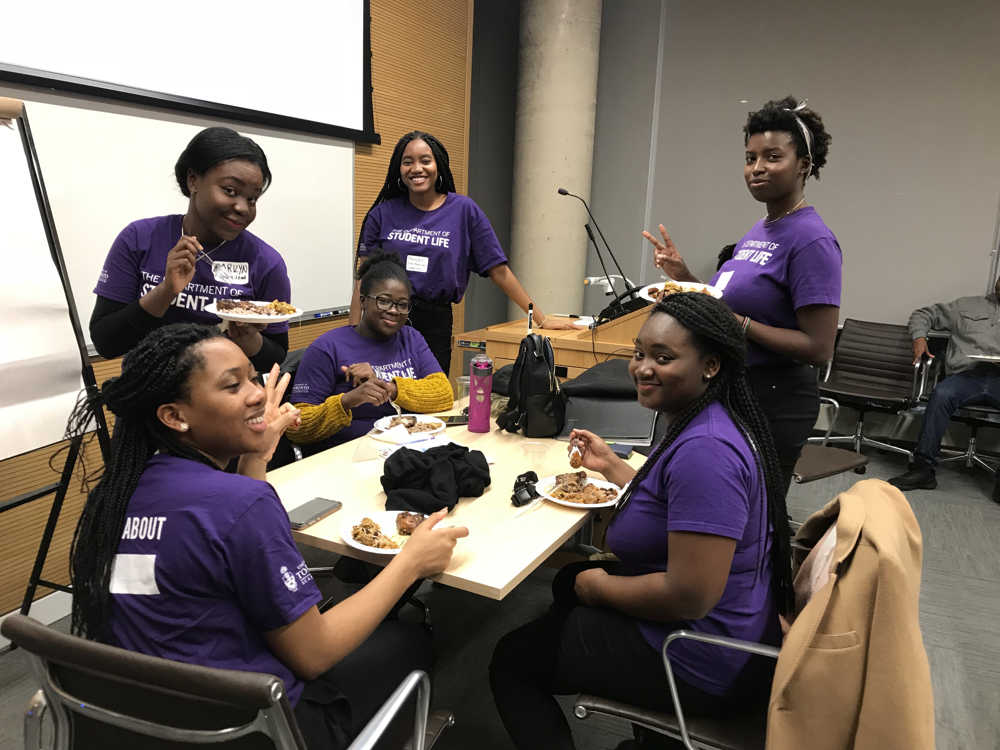

Introducing Imani's New Digital Space

This plateform will support the program's movement towards online delivery.
Established more than 15 years ago, the Imani Academic Mentorship Program was designed to foster a community of support through mentorship. Black youth have and continue to face systemic anti-Black racism in the public education system. The Imani Academic Mentorship Program engages with this systemic injustice by engaging UTSC students who reflect the community we aim to serve. In response to the COVID-19 pandemic, we have shifted our program to digital platform. This site was created to central information, communitication and ressources for mentees, parents and mentors.
This plateform will support the program's movement towards online delivery.
Digital portal will provided information on weekly sessions, events, and academic resources. A pre-programmed chat bot is accessible for additional support and guidance.
Parents, Mentees and Mentors will be better connected to the Imani Community of Support.